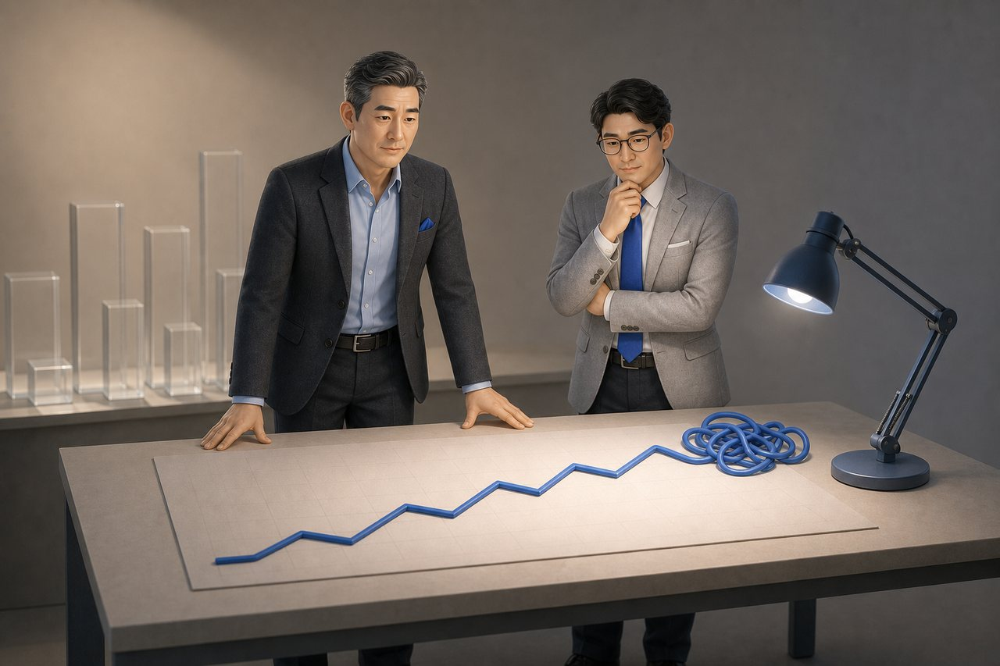
01신호한 대표 · 제조
열한 시의 그래프
11월 밤 열한 시, 임 대표는 마포 사무실에서 3분기 매출 그래프를 보고 있었다. 두 자릿수로 올랐는데, 안도보다 불안이 먼저 왔다. 그때 한 대표가 전화했다 — 회사는 돌아가는데 무엇이 돌아가는지 모르겠다고.
회사가 아픈 게 아니라, 어디가 아픈지 모른다는 것이 아픈 것이다.
소프트웨어 회사의 임 대표와 제조 공장의 한 대표.
업종은 달랐지만 병은 같았다.
두 사람이 경영전환을 지나온 이야기입니다.
마포의 소프트웨어 회사.
매출은 두 자릿수로 올랐지만, 대시보드의 숫자만큼 마음이 놓이지 않았다.
화성의 제조 공장.
매달 새 태스크포스를 꾸렸지만, 기분은 한 달을 못 갔다.
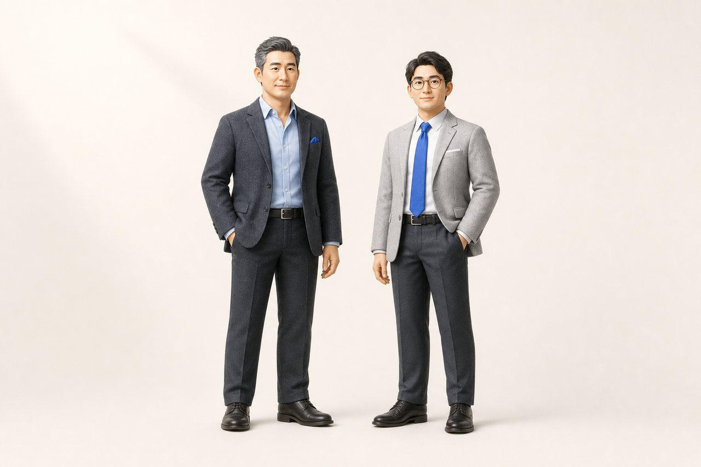
업종은 달랐습니다. 임 대표는 소프트웨어, 한 대표는 제조. 그러나 병은 같았습니다 — 더할수록 무거워졌고, 무엇을 멈출지는 아무도 묻지 않았습니다. 열두 장면에 걸쳐, 두 사람이 전환을 지나온 기록입니다.

11월 밤 열한 시, 임 대표는 마포 사무실에서 3분기 매출 그래프를 보고 있었다. 두 자릿수로 올랐는데, 안도보다 불안이 먼저 왔다. 그때 한 대표가 전화했다 — 회사는 돌아가는데 무엇이 돌아가는지 모르겠다고.
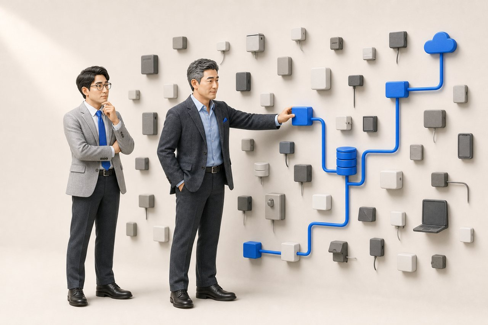
임 대표가 회사의 도구를 세니 마흔두 개였다. 매일 보는 것은 다섯 개도 안 됐다. 한 대표의 공장 대형 모니터도 손님용이었고, 작업 지시는 여전히 화이트보드에 적혔다.
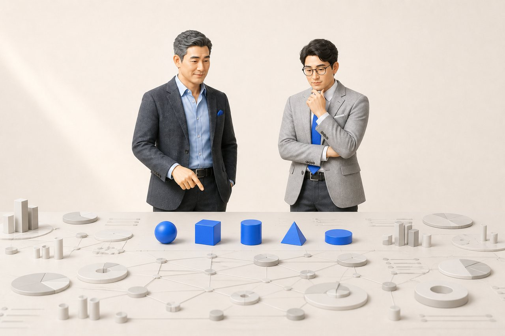
대시보드엔 마흔 개 넘는 지표가 있었지만 매일 본 건 다섯뿐이었다. 데이터가 그를 객관적으로 만든 게 아니라, 오래된 관심이 데이터를 골라내고 있었다. 그는 첫 화면의 두 자리를 바꿨다.
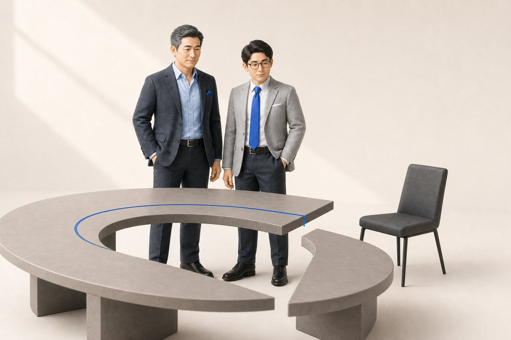
2월 아침, 한 대표는 5년 거래한 대형 고객의 이탈 통보를 읽었다. 그 거래처가 매출의 38퍼센트였다. 생산도 품질도 아이디어도 그 거래처에 맞춰져 있었다.
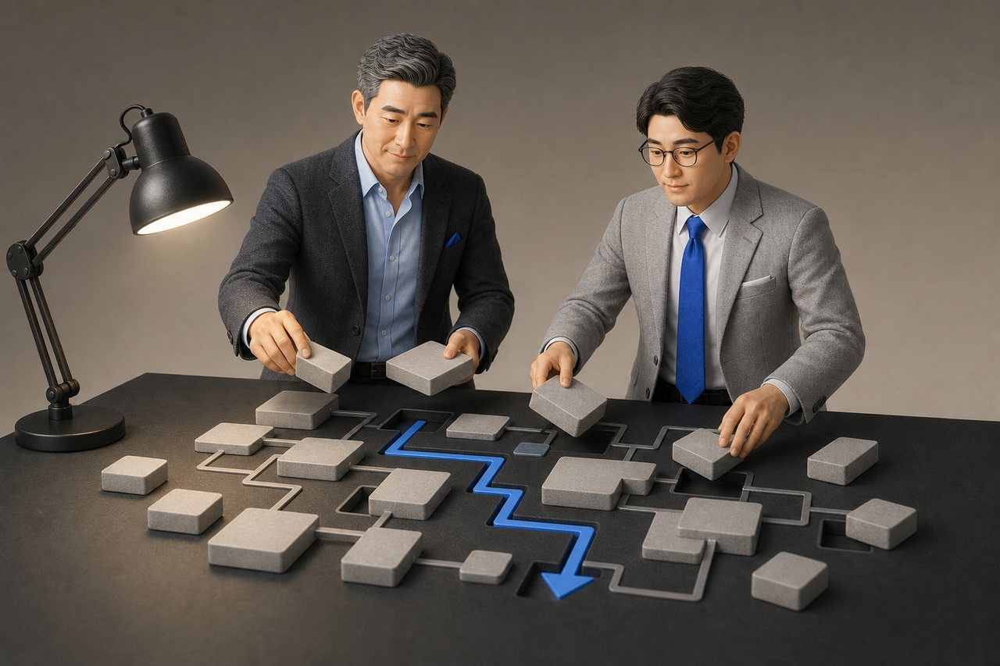
밤이 깊을수록 둘은 조용해졌다. 처음엔 무엇을 더 할지 말했고, 이제는 무엇을 남길지 말했다. 한 대표는 제품 열네 개를, 임 대표는 기능 서른두 개를 앞에 놓고 있었다.
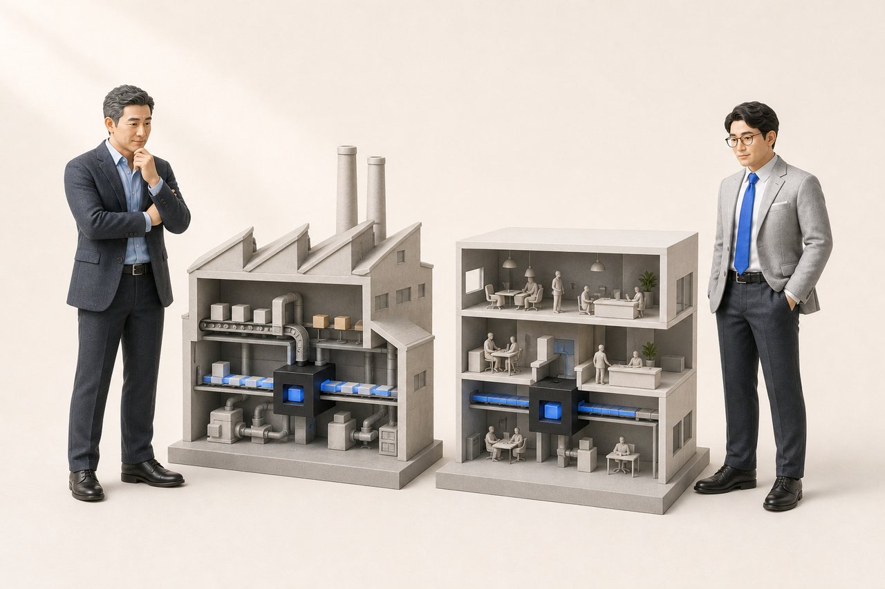
제조업과 SaaS는 달랐지만 더하기의 병은 같았다. 냅킨에 상자를 그리자 화살표는 모두 안으로만 향했다. 나가는 화살표를 그려보니, 두 상자 밑에 나란히 영(0)이 적혔다.
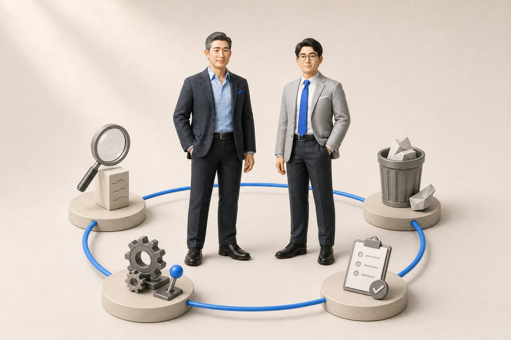
이듬해 봄, 분기 회의 안건 셋째 줄에 이번 분기에 멈출 것이 적혀 있었다. 올린 사람은 대표가 아니라 서른두 살 생산팀장이었다. 두 해 전엔 아무도 답 못 하던 질문이 이제 양식의 한 줄이 되어 있었다.
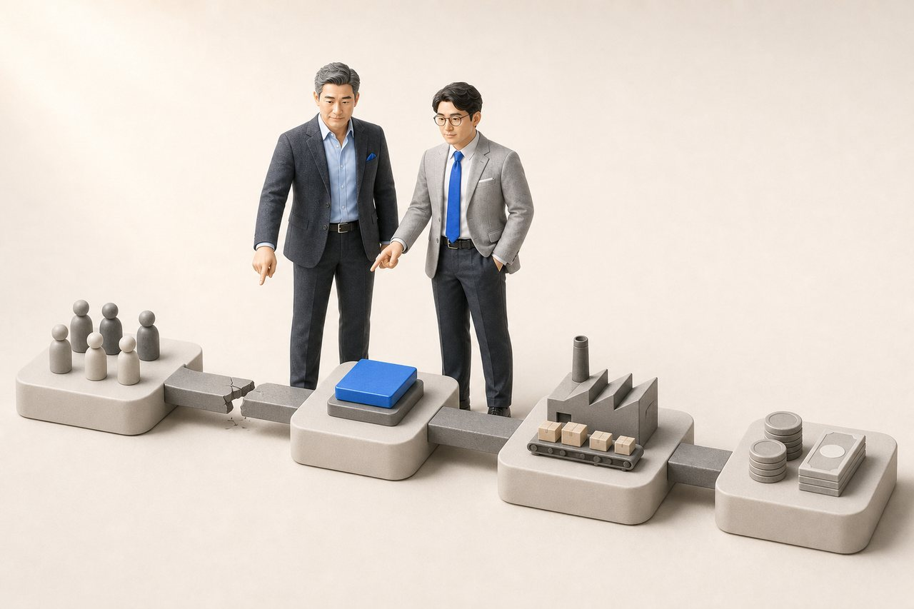
네 축을 다 지난 저녁, 임 대표는 제품이 아니라 계약으로 넘어가는 길목이 새고 있었음을 봤다. 한 대표는 반대였다 — 설비는 새것인데 일하는 방식은 이십 년 전 그대로였다.
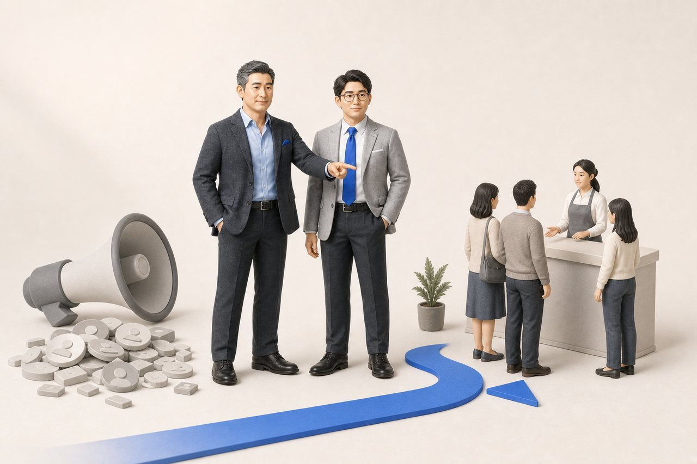
임 대표는 PR 캠페인에 한 달 2천만 원을 썼다. 문의는 늘었지만 계약은 아니었다 — 밖에서 사람을 끌어왔는데 안에서 받을 준비가 없었다. 캠페인을 절반으로 줄이고 남은 예산을 첫 화면과 상담 대본에 썼다.
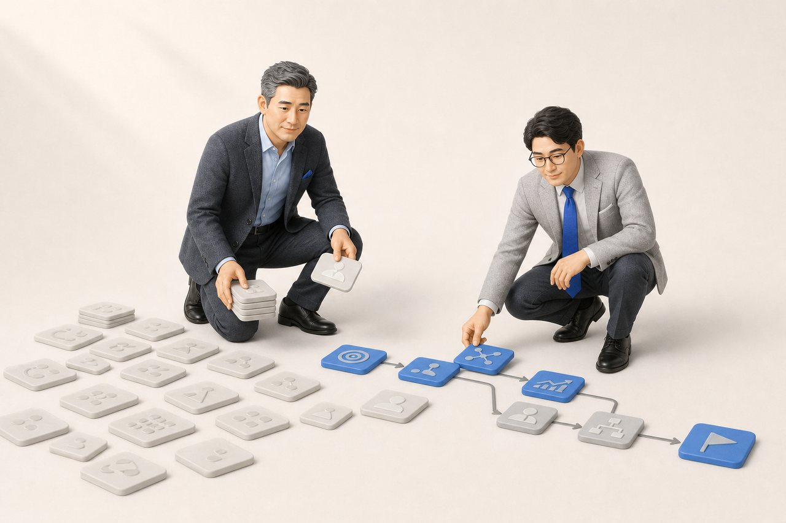
전략이 회의실 문장으로 끝나면 안 됐다. 몇 달 뒤 서비스 기능은 서른두 개에서 열일곱 개로 줄었다. 월 활성 사용자가 열 명도 안 되는 기능을 접고, 큰 고객을 붙잡은 하나는 숫자로 지켰다.
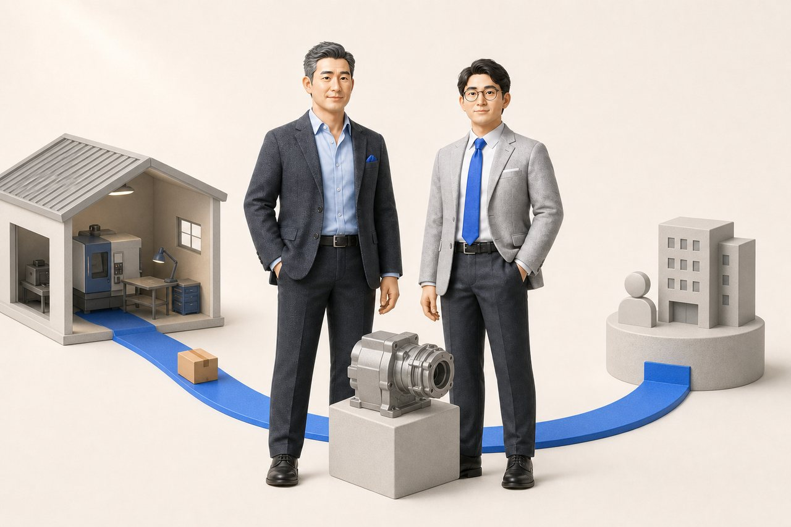
화성 공장에 봄볕이 완연하던 오전, 한 대표는 산업용 부품 하나를 스마트스토어에 올렸다. 하루 매출 12만 원. 대리점을 거치지 않고 직접 온 첫 고객의 돈이었다.
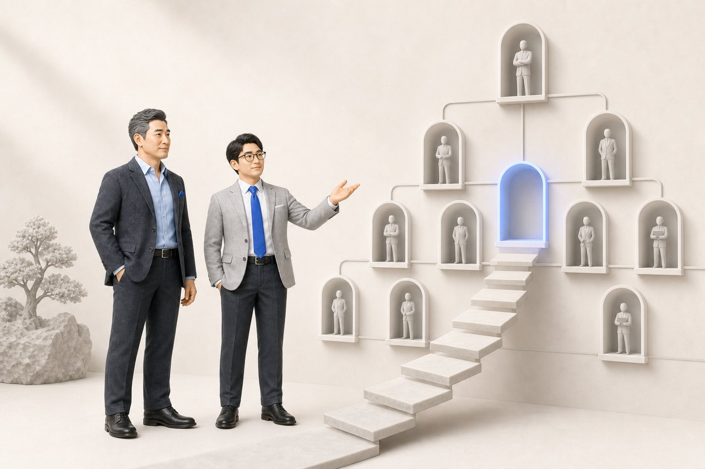
가을이 깊을 무렵, 임 대표가 물었다 — 이제 자리를 잡은 것 같으냐고. 제품도 줄이고 공정도 바꿨지만 사람을 고르는 기준은 비어 있었다. 제품을 줄일 땐 숫자가 있었는데, 사람 앞에선 인상만 남았다.
업종은 달랐지만, 그림은 같았다.
달라진 것은 막히지 않는 것이 아니라, 막혔을 때 돌아오는 속도와 깊이였다.
아래는 책 『경영전환론』에 실린 사례로, 회사와 사람을 보호하기 위해 익명화·재구성한 합성 사례입니다. 숫자는 특정 실적이 아니라 선택의 크기와 순서를 보여주는 예시값입니다.
반응이 오자 세 사람을 채용하고 사무실을 얻었다.
그러나 초기의 밀착 서비스가 무너졌고,
신규 계약은 들어와도 재계약이 이어지지 않았다.
모든 안건이 대표에게 몰리던 회사.
자리를 비운 2주, 자신이 병목이었음을 봤다.
팀장 선에서 끝낼 일과 대표가 볼 일을 나누자 연락이 줄었다.
보상을 손봐도 퇴사 흐름은 그대로였다.
매주 프로젝트가 바뀌고 지난주 일이 설명 없이 사라졌다.
역할·성장 대화를 정례화하고 일의 경로를 한 장으로 정리했다.
반복되는 출고 오류를 물류팀 주의력 문제로 봤다.
흐름을 따라가니 주문 입력과 재해석 방식이 원인이었다.
바꾼 것은 사람이 아니라 입력 기준·변경 권한·마감 시각이었다.
방문자는 충분한데 결제 직전 배송비가 붙자 이탈했다.
총액은 같아도 표시 방식이 신뢰를 깼다.
배송비를 포함해 무료배송으로 표시하자 전환율이 올랐다.
반응이 오자 세 사람을 채용하고 사무실을 얻었다.
그러나 초기의 밀착 서비스가 무너졌고,
신규 계약은 들어와도 재계약이 이어지지 않았다.
모든 안건이 대표에게 몰리던 회사.
자리를 비운 2주, 자신이 병목이었음을 봤다.
팀장 선에서 끝낼 일과 대표가 볼 일을 나누자 연락이 줄었다.
보상을 손봐도 퇴사 흐름은 그대로였다.
매주 프로젝트가 바뀌고 지난주 일이 설명 없이 사라졌다.
역할·성장 대화를 정례화하고 일의 경로를 한 장으로 정리했다.
반복되는 출고 오류를 물류팀 주의력 문제로 봤다.
흐름을 따라가니 주문 입력과 재해석 방식이 원인이었다.
바꾼 것은 사람이 아니라 입력 기준·변경 권한·마감 시각이었다.
방문자는 충분한데 결제 직전 배송비가 붙자 이탈했다.
총액은 같아도 표시 방식이 신뢰를 깼다.
배송비를 포함해 무료배송으로 표시하자 전환율이 올랐다.
손익은 흑자였지만 매달 급여를 단기 대출로 막았다.
현금 회전 주기가 112일이었다.
90일 어음을 30일 현금 결제로 바꾸자 수중의 현금이 달라졌다.
매출·손익은 좋아 보였지만 가용 현금이 위태로웠다.
생존에는 일주일치, 확장에 돈이 묶여 있었다.
현금 회수를 앞당기고 제2공장을 멈춘 뒤에야 확장에 돈을 썼다.
적자를 매출 확대로 메우려 했다.
품목별 손익을 나누자 흑자 품목이 적자 품목을 떠받치고 있었다.
출혈 품목을 멈추자 매출은 줄고 현금은 돌아왔다.
대기업 HR 임원 출신이 중소기업 컨설팅으로 창업했다.
상시 고용 대신 믿을 수 있는 프리랜서 네트워크로 수주했다.
사무실도 고정 인력도 없이 일의 규모가 커졌다.
둘 다 신메뉴·배달앱·굿즈·팝업을 벌였다.
한 곳은 반응 없는 것을 멈추고 남길 것에 집중했다.
무엇을 멈출지 정하는 능력이 자원의 밀도를 갈랐다.
손익은 흑자였지만 매달 급여를 단기 대출로 막았다.
현금 회전 주기가 112일이었다.
90일 어음을 30일 현금 결제로 바꾸자 수중의 현금이 달라졌다.
매출·손익은 좋아 보였지만 가용 현금이 위태로웠다.
생존에는 일주일치, 확장에 돈이 묶여 있었다.
현금 회수를 앞당기고 제2공장을 멈춘 뒤에야 확장에 돈을 썼다.
적자를 매출 확대로 메우려 했다.
품목별 손익을 나누자 흑자 품목이 적자 품목을 떠받치고 있었다.
출혈 품목을 멈추자 매출은 줄고 현금은 돌아왔다.
대기업 HR 임원 출신이 중소기업 컨설팅으로 창업했다.
상시 고용 대신 믿을 수 있는 프리랜서 네트워크로 수주했다.
사무실도 고정 인력도 없이 일의 규모가 커졌다.
둘 다 신메뉴·배달앱·굿즈·팝업을 벌였다.
한 곳은 반응 없는 것을 멈추고 남길 것에 집중했다.
무엇을 멈출지 정하는 능력이 자원의 밀도를 갈랐다.
특정 기능 하나(마케팅·인사·재무)를 고치는 것이 아니라,
人·營·財·産 네 축의 연결로 회사 전체를 보고 무엇부터 바꿀지 설계합니다.
문제는 대개 보이는 곳이 아니라 다른 축에 있습니다.
규모보다 국면입니다.
“매출은 늘었는데 대표의 일은 줄지 않는다” 같은 신호가 보이면,
작은 회사일수록 전환에 드는 비용이 적습니다.
네. 경영전환 진단만 단독으로 받으실 수 있고,
그전에 자가진단으로 스스로 먼저 짚어보셔도 됩니다.
직원의 상시업무를 대신하지 않습니다.
문제를 정의하고 구조를 설계하고 실행을 관리해,
조직이 스스로 판단하고 움직이도록 돕습니다.
합니다. 다만 기술을 먼저 팔지 않습니다.
이미 있는 도구로 해결된다면 개발하지 않고, 실제 업무의 병목을 줄이는 것이 목적입니다.
홈페이지에는 표시하지 않습니다.
기업 상황과 과제 범위에 따라 수행방식과 비용을 상담 후 제안드립니다.